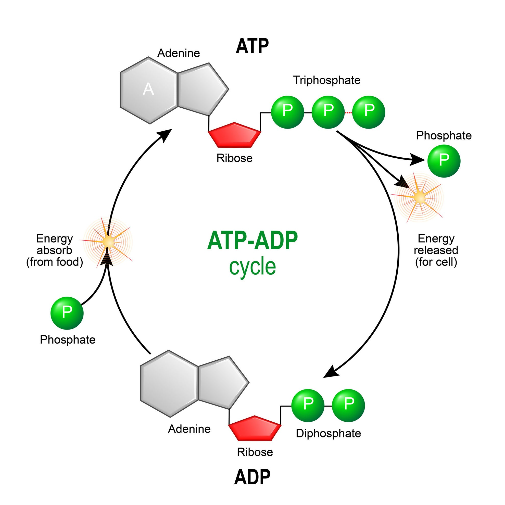
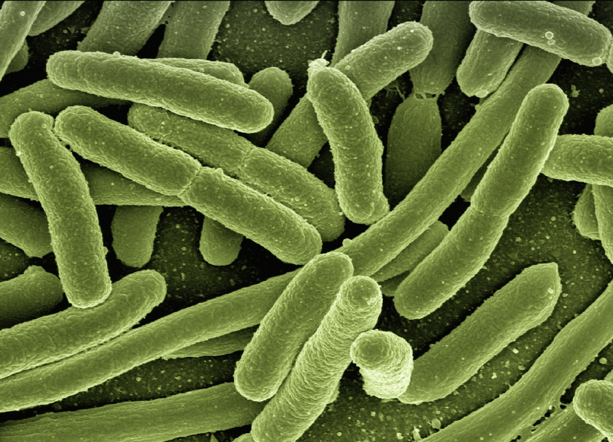
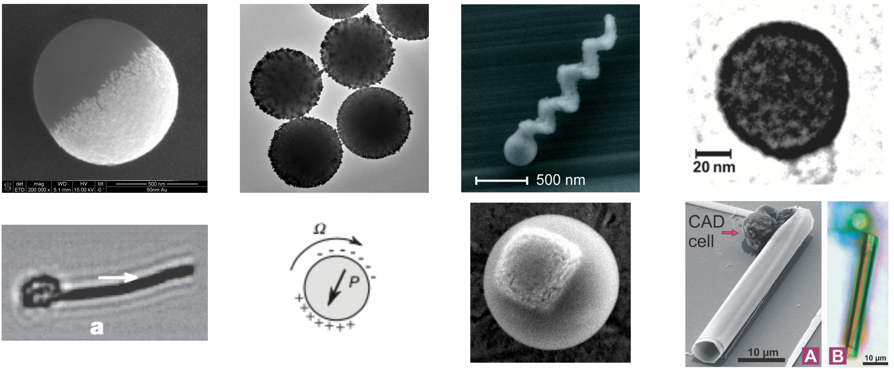
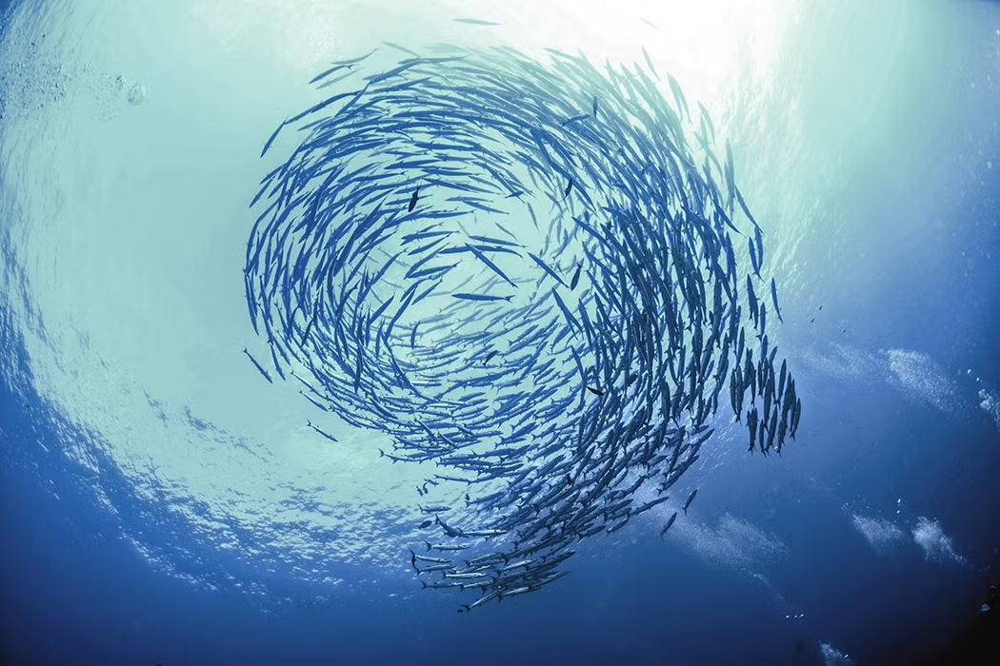
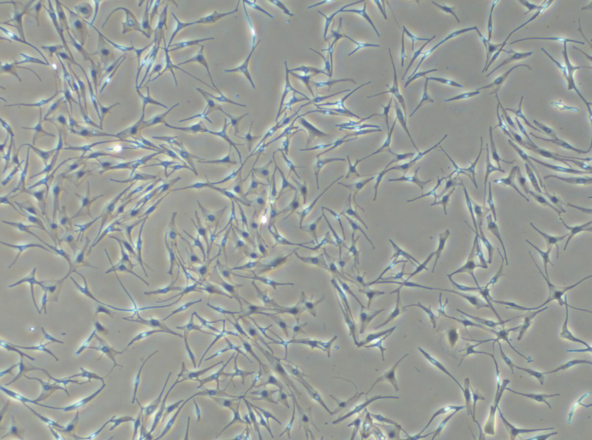
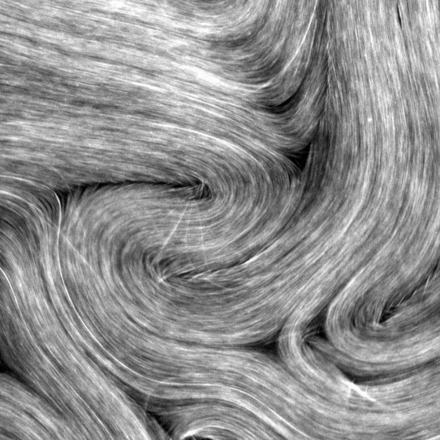

Introduction to Active Matter
Lecture 1
Historical context and emergence of the field
The study of active matter emerged in the late 20th century at the intersection of soft matter physics, biophysics, and statistical mechanics. An important precursor to the field came from computer graphics, where Craig Reynolds developed the Boids simulation in 1986 - an artificial life program that demonstrated how simple rules governing individual agents could produce realistic flocking behaviors in computer animations. Earlier cellular automata models like Conway’s Game of Life had also shown how simple rules could lead to complex emergent behaviors, helping establish some of the conceptual foundations for understanding collective systems.
The Boids model, developed by Craig Reynolds in 1986, simulates the flocking behavior of birds using three simple rules:
- Separation: Each boid avoids crowding nearby flockmates, steering away when they get too close.
- Alignment: Each boid aligns its direction of flight with nearby flockmates, matching their average velocity.
- Cohesion: Each boid moves toward the center of mass of nearby flockmates, creating a tendency to stick together.
These local interaction rules, when applied to all individuals simultaneously, produce complex global behaviors that remarkably resemble natural flocking patterns. The simulation above demonstrates how adjusting these three parameters affects the emergent collective motion:
- High separation, low alignment, low cohesion: Dispersed individuals with minimal coordination
- Low separation, high alignment, medium cohesion: Coherent flocking with directional movement
- Balanced parameters: Natural-looking flocking behaviors with dynamic subgroup formation
This model illustrates a fundamental principle in active matter physics: complex collective behaviors can emerge from simple local rules without centralized control.
This computational model later influenced physical approaches to collective motion. Early foundational work by scientists like T. Vicsek in the 1990s established computational models for collective motion, particularly his 1995 paper introducing what is now known as the Vicsek model for self-propelled particles with alignment interactions. Prior to this, early biological observations of collective behaviors in nature, such as bird flocking and fish schooling, had long fascinated scientists but lacked rigorous physical frameworks. The field gained significant momentum in the late 1990swith seminal papers by John Toner and Yuhai Tu, who published their groundbreaking work on flocking theory in 1995, and later Sriram Ramaswamy who developed continuum theories for active nematics.
The theoretical foundations were further strengthened by contributions from European researchers like Michael Cates (Edinburgh), Jean-François Joanny (Paris), and Jacques Prost (Paris), who developed the active gel theory to describe cytoskeletal dynamics in the mid-2000s. Simultaneously, M. Cristina Marchetti and her collaborators formulated comprehensive hydrodynamic theories for active systems across various symmetry classes. Sriram Ramaswamy made fundamental contributions through his work on active liquid crystals and the development of generic hydrodynamic theories for active matter. The pioneering work of John Toner and Yuhai Tu established the theoretical framework for understanding the emergence of long-range order in flocking systems, demonstrating how activity can stabilize orientational order even in two dimensions. Julia Yeomans (Oxford) advanced our understanding of active turbulence and topological defects in active nematics through innovative computational approaches, while Hartmut Löwen (Düsseldorf) developed influential theories for the collective behavior of active Brownian particles and motility-induced phase separation. These theoretical advances were complemented by experimental breakthroughs, notably Howard Berg’s groundbreaking work in the 1970s at Harvard on bacterial chemotaxis and motility, where he developed the tracking microscope to follow individual E. coli bacteria and discovered their run-and-tumble motion patterns. Additional experimental contributions came from Raymond Goldstein (Cambridge) and others who established quantitative measurements of collective motion in bacterial systems.
Experimental breakthroughs with bacterial suspensions (notably work by Igor Aranson and Raymond Goldstein on Bacillus subtilis), cell tissues (including Xavier Trepat’s research at IBEC in Barcelona on epithelial cell sheets), and synthetic active colloids (pioneered by European researchers like Jérémie Palacci (Lyon/San Diego), Julien Perrin (Paris), and Clemens Bechinger (Konstanz/Stuttgart) with light-activated Janus particles) further propelled the field forward. The development of artificial microswimmers by international collaborations involving European teams led by Roberto Di Leonardo (Rome), Ramin Golestanian (Oxford/Göttingen), and Frank Cichos (Leipzig), alongside US-based researchers like Steve Granick and Ayusman Sen, opened new avenues for creating controllable active systems outside biological contexts.
By the 2010s, active matter had developed into a distinct discipline with dedicated conferences and research groups worldwide. The establishment of specialized research centers across Europe such as the Max Planck Institute for Dynamics and Self-Organization in Göttingen, the Physics of Living Matter Group at Cambridge, the Biological Physics and Morphogenesis groups at MPIPKS Dresden, alongside the Syracuse Soft and Living Matter Program, the Center for the Physics of Biological Function at Princeton, and the Active Matter Lab at MIT reflected the field’s growing importance. Major milestones included the observation of motility-induced phase separation by Michael Cates (Edinburgh) and Julien Tailleur (Paris) (2013), the discovery of topological defect motility in active nematics by Zvonimir Dogic and collaborators (2014), and the creation of the first autonomous active material capable of performing work by Daniela Wilson’s group (Nijmegen) (2019). The field continues to expand with increasing interdisciplinary collaborations between physicists, biologists, materials scientists, and engineers, addressing fundamental questions in non-equilibrium physics while developing applications in biomedicine, soft robotics, and smart materials.
Distinguishing features from equilibrium systems
Understanding how active matter systems differ from equilibrium systems is crucial for developing new theoretical frameworks and experimental approaches. The continuous energy input and self-driven nature of active matter leads to behaviors that challenge our traditional physics understanding. Consider the following key distinctions between equilibrium and active matter systems:
| Feature | Equilibrium Systems | Active Matter Systems |
|---|---|---|
| Detailed Balance | Forward and reverse processes occur at equal rates | Continuously broken through energy consumption, driving the system away from equilibrium |
| Fluctuation-Dissipation Theorem | Valid relationship between spontaneous fluctuations and response to external perturbations | Breaks down as fluctuations can be driven by internal activity |
| Particle Motion | Random Brownian motion | Persistent directional motion over certain timescales |
| Statistical Distributions | Follow Boltzmann statistics | Non-Boltzmann statistics, making standard thermodynamic tools inapplicable |
| Macroscopic Currents | Absent in steady states | Can sustain macroscopic currents and flux cycles even in steady states |
| Phase Behavior | Well-established equilibrium phases | Unique phase transitions with no equilibrium counterparts (e.g., motility-induced phase separation, active turbulence) |
| Mechanical Pressure | Independent of boundary properties | Can depend on properties of confining walls, violating equilibrium equations of state |
| Energy and Entropy | Minimize free energy, maximize entropy | Continuously dissipate energy and produce entropy even in steady states |
| Time-Reversal Symmetry | Dynamics appear similar when played forward or backward | Dynamics look distinctly different when played forward versus backward |
| Force Characteristics | Derivable from a potential energy function | Cannot generally be derived from a potential energy function |
Classification and Examples of Active Systems
Active matter encompasses a diverse range of systems, from biological organisms to synthetic particles, that share the common feature of continuously converting energy into systematic motion. These systems can be organized into several categories based on their energy sources, symmetries, and the nature of their interactions, providing a framework for understanding their distinct behaviors and properties.
Active matter systems can be categorized based on several key characteristics:
- Biological active matter: Systems that convert chemical energy (ATP, nutrients) into mechanical work (e.g., bacteria, cells, tissues). These systems span multiple scales, from molecular motors like kinesin and myosin that transport cargo along cytoskeletal filaments, to cellular components such as the dynamic cytoskeleton that enables cell shape changes and migration. At multicellular scales, coordinated activity enables tissue morphogenesis during development, wound healing, and collective cell migration. The energy conversion typically involves ATP hydrolysis, which provides approximately 20 kT of energy per molecule, enabling these systems to perform work against thermal fluctuations. Unlike their synthetic counterparts, biological active matter often exhibits adaptive behaviors, feedback regulation, and hierarchical organization that enhances functionality and robustness.


- Synthetic active matter: Engineered systems powered by external fields, chemical reactions, or light (e.g., Janus particles, active colloids). These artificial systems represent human-designed analogs to biological active matter, with scientists having precise control over their properties and behaviors. Synthetic active particles typically feature asymmetric structures or surface properties that enable self-propulsion. Common examples include Janus particles with catalyst-coated hemispheres that decompose hydrogen peroxide to create propulsion, light-activated particles that convert photonic energy into motion, and magnetically-actuated microswimmers that respond to oscillating external fields. Unlike biological systems, synthetic active matter can be designed with specific functionalities, such as targeted drug delivery, environmental remediation, or self-assembly into complex structures. Recent advances have produced programmable behaviors through responsive materials, feedback mechanisms, and even rudimentary “communication” between synthetic active agents.

- Polar active matter: Entities with defined front-back asymmetry and directional motion (e.g., birds, fish). These systems are characterized by particles or organisms that have a clear direction of motion and can align their movement with neighbors. For example, fish schools demonstrate this through their streamlined body shape that defines a clear swimming direction, while their lateral line system helps them align with neighboring fish. Similarly, migratory birds show polar order through their aerodynamic body structure and visual alignment with flock-mates during flight. At the microscopic scale, many bacteria like E. coli exhibit polar motion through their flagellar propulsion system that creates directed swimming. The polar nature of these systems often leads to unique collective phenomena like the emergence of large-scale coherent motion and the formation of traveling bands or density waves.

- Apolar active matter: Systems generating motion without a defined direction (e.g., melanocytes, active nematics). These systems exhibit interesting collective behaviors despite lacking a preferred direction of motion at the individual level. For example, melanocytes, the cells responsible for skin pigmentation, extend and retract protrusions in multiple directions as they move and distribute melanin. Similarly, active nematics, such as dense suspensions of microtubules and molecular motors, generate complex flows and defect dynamics without any preferred direction of motion for individual components. The apolar nature of these systems often leads to unique phenomena like the spontaneous formation and annihilation of topological defects, and the emergence of active turbulence in confined geometries.


- Chiral active matter: Systems with inherent rotational motion or handedness. These systems exhibit systematic rotational motion in addition to translational movement, often due to structural asymmetry or biased force generation. Examples include bacterial flagella that rotate to create propulsion, sperm cells that swim with helical trajectories, and synthetic microswimmers with chiral shapes that spin as they move through fluid. The interplay between rotational and translational motion in these systems can lead to unique collective behaviors, such as the formation of rotating clusters or vortex arrays. At the microscopic scale, molecular motors like the bacterial flagellar motor demonstrate how nature utilizes chirality to generate motion, while at larger scales, schools of fish can form rotating vortex patterns through their collective swimming behavior.
Dry active matter: Systems where momentum dissipates to a substrate (e.g., cells on surfaces). In these systems, the primary interaction between particles occurs through direct contact or short-range forces, as the substrate quickly dampens any long-range hydrodynamic effects. A classic example is cells crawling on a surface, where the friction with the substrate dominates the dynamics. Another example is vibrated granular layers, where energy input causes particle motion but momentum is quickly dissipated through collisions with the base plate and between particles.
Wet active matter: Systems embedded in a fluid where hydrodynamic interactions dominate (e.g., bacterial suspensions). These systems exhibit complex long-range interactions mediated by the fluid, as the motion of each active particle creates flow fields that affect distant particles. Examples include swimming microorganisms in water, where the fluid flows generated by one organism can influence the motion of others several body lengths away. Active colloids in suspension also demonstrate these effects, where the chemical activity or motion of particles creates fluid flows that lead to collective behaviors and pattern formation.
Active crystals: Ordered lattice-like arrangements with activity. These systems maintain crystalline order while individual units remain active, such as in bacterial colonies that form regular spatial patterns while each bacterium continues to move and metabolize. A key example is the formation of living crystals from light-activated colloidal particles, where the particles self-organize into a crystalline lattice while maintaining their individual motility.
Active glasses: Disordered, jammed configurations with activity. Unlike traditional glasses, these systems combine structural disorder with persistent local motion, leading to unique dynamical behaviors. Examples include dense bacterial suspensions at high concentrations where cells become trapped in disordered configurations but continue to exert active forces on their neighbors, or crowded solutions of motor proteins and filaments where steric constraints create glassy dynamics despite ongoing ATP-driven activity.
Active fluids/gases: Flowing systems with active components. These systems exhibit fluid-like behavior but with constituents that continuously inject energy at the microscopic scale. Examples range from dilute bacterial suspensions that show enhanced diffusion and collective motion, to dense active liquid crystals where the interplay between flow and orientational order creates complex dynamical patterns like active turbulence. In the gas-like regime, systems like midge swarms demonstrate how active particles can maintain cohesion while exhibiting fluid-like properties.
Microscopic: Cellular and subcellular systems (cytoskeleton, bacterial colonies). At this scale, active matter emerges from molecular motors like kinesin and dynein walking along cytoskeletal filaments, or the collective motion of bacterial cells in colonies. The cytoskeleton itself is a fascinating example where networks of actin filaments and microtubules, driven by ATP-powered molecular motors, create complex dynamics essential for cell function and division.
Mesoscopic: Tissue and organ-level organizations. At the tissue level, collective cell behavior leads to emergent phenomena like wound healing and morphogenesis during development. Epithelial tissues demonstrate active matter dynamics through coordinated cell migration and mechanical force transmission between neighboring cells. These intermediate scales bridge individual cell behavior with organ-level function.
Macroscopic: Animal groups, human crowds. Large-scale collective behaviors emerge in systems like bird flocks, fish schools, and human crowds in urban environments. These systems demonstrate how simple interaction rules between individuals can create complex, coordinated motion patterns that span hundreds or thousands of times the size of individual agents. Traffic flow and pedestrian dynamics are particularly relevant examples for urban planning and crowd safety.
Quasi-2D vs. 3D systems: Systems confined to surfaces vs. fully three-dimensional systems. Many active matter systems are effectively two-dimensional, like bacterial colonies growing on agar plates or cells migrating on substrates. These confined geometries often simplify both experimental observation and theoretical analysis. In contrast, true three-dimensional systems like bacterial suspensions in fluid or cell movement in tissue matrices exhibit additional complexities due to hydrodynamic interactions and the full range of possible motion directions.
Overview of theoretical approaches and challenges
The theoretical description of active matter draws from and extends multiple branches of physics:
Boltzmann-like approaches: Describing probability distributions of particle positions and orientations in active systems. For example, in bacterial suspensions, this approach tracks how the probability of finding bacteria with specific positions and swimming directions evolves over time. The key difference from classical Boltzmann equations is the inclusion of self-propulsion forces and alignment interactions. These equations have been particularly successful in describing the transition from disordered to ordered states in active systems like bird flocks and fish schools.
Fokker-Planck equations: Capturing the evolution of probability densities in phase space by incorporating both deterministic and stochastic effects. In active matter, these equations describe how probability distributions change due to systematic forces (like self-propulsion), random fluctuations (thermal or active noise), and interactions between particles. For instance, they can model how Janus particles move under the influence of chemical gradients while experiencing rotational diffusion, or how swimming bacteria respond to chemical attractants while subject to tumbling events.
Smoluchowski equations: Modeling overdamped dynamics common in biological active systems where inertial effects are negligible compared to viscous forces. These equations are particularly relevant for microscopic swimmers like bacteria or colloidal particles where the Reynolds number is very small. They have been successfully applied to describe phenomena like bacterial chemotaxis, the collective motion of cell populations, and the dynamics of motor proteins along cytoskeletal filaments. A classic example is modeling E. coli’s run-and-tumble motion, where the Smoluchowski equation – the overdamped limit of the Fokker-Planck equation – captures the interplay between directed swimming and random reorientations.
Toner-Tu theory: A hydrodynamic framework that describes collective motion in flocking systems by incorporating broken continuous symmetry. This theory is particularly powerful for analyzing large systems, where it predicts true long-range order can exist even in two dimensions, in contrast to equilibrium systems. While real flocks are finite, the theory provides insights into large-scale behaviors like the scale-free correlations observed in starling murmurations, where thousands of birds maintain coherent motion despite environmental perturbations.
Active gel theories: These theories extend traditional liquid crystal physics by incorporating force-generating active stresses. They are particularly successful in describing biological materials like the cell cytoskeleton, where molecular motors generate internal forces. A key example is explaining the spontaneous flows observed in actomyosin networks, where myosin motors walking along actin filaments create large-scale coherent motion.
Active nematics: Field theories that describe systems with orientational order but no polar direction, driven out of equilibrium by active stresses. These theories have been instrumental in understanding phenomena like the chaotic dynamics of microtubule-kinesin mixtures, where energy input from molecular motors leads to the continuous creation, motion, and annihilation of topological defects, resulting in active turbulence.
Phase field models: Mathematical frameworks that track the evolution of interfaces and boundaries in active systems without explicitly tracking individual particles. These models have been successfully applied to describe phenomena like cell membrane deformation during motility, tissue morphogenesis, and the dynamics of active droplets. For instance, they can capture how a crawling cell changes shape and moves by coupling chemical signals to mechanical deformations of the cell membrane.
Vicsek model: The foundational model for collective motion where particles move at constant speed and align their direction with neighbors within a certain radius, subject to noise. For example, in simulating bird flocks, each bird adjusts its direction to match the average flight direction of nearby birds, plus some random variation. This simple rule produces rich collective behaviors like the transition from disordered motion at high noise to coordinated flocking at low noise.
Active Brownian particles: Self-propelled particles that maintain constant speed but undergo rotational diffusion, leading to persistent random walks. A classic example is light-activated Janus colloids - microscopic particles with one hemisphere coated in a light-responsive material. Under illumination, these particles swim in a directed manner but gradually change direction due to thermal fluctuations, resulting in motion that is ballistic at short times but diffusive at long times.
Run-and-tumble models: These models capture the motion pattern of bacteria like E. coli, which alternate between straight “runs” and random “tumbles.” During runs, the bacteria swim in nearly straight lines using their flagella. Tumbles occur when the flagella bundle comes apart, causing the cell to randomly reorient. This mechanism allows bacteria to effectively explore their environment and respond to chemical gradients through biased random walks.
Active Ornstein-Uhlenbeck particles: A model incorporating temporal correlations in the active propulsion force, leading to more realistic descriptions of biological swimmers. For instance, in modeling the motion of algae like Chlamydomonas, the swimming force isn’t purely random but shows correlations over the time scale of the flagellar beat cycle. This correlation produces more accurate predictions of diffusion and clustering behaviors compared to simpler active particle models.
Challenges in the field of active matter
The scientific study of active matter presents several key theoretical and experimental challenges that continue to motivate research and technological innovation in the field:
Diversity in propulsion mechanisms and functionality: Creating synthetic active particles with diverse propulsion strategies and functional capabilities remains challenging. Current systems are largely limited to chemical catalysis, light activation, or magnetic actuation. Beyond propulsion, developing particles capable of force generation, information processing, and programmable behaviors through compartmentalization and feedback control is crucial. This includes systems that can adapt their behavior based on environmental cues or machine learning algorithms.
Multi-component systems: Developing heterogeneous active matter systems with different types of particles that can interact and coordinate. For example, combining light-activated and chemically-powered particles, or integrating passive and active components to create hierarchical structures with emergent behaviors.
Measurement techniques: Developing methods to track fast dynamics across multiple scales. Active matter systems often exhibit complex spatiotemporal dynamics that require simultaneous tracking of individual particles and collective behaviors. High-speed imaging, particle tracking, and flow visualization techniques must be adapted to capture both the rapid motion of individual active units and the slower evolution of large-scale patterns.
System preparation: Creating synthetic particles with programmable behaviors and functions. The synthesis of active colloids requires careful control over particle size, shape, surface chemistry, and catalyst distribution, as well as the integration of responsive elements that enable specific functionalities. For instance, incorporating multiple catalytic or stimuli-responsive domains to create particles capable of complex tasks remains technically challenging.
Boundary conditions: Controlling and characterizing interactions with surfaces. Active matter systems are highly sensitive to boundary conditions, which can significantly influence their behavior. Creating well-defined boundaries while maintaining activity and avoiding unwanted surface effects requires careful experimental design and characterization.
Energy input: Maintaining steady, uniform activation across synthetic systems. Whether through chemical fuel concentration, light intensity, magnetic fields, or electric fields, ensuring uniform activation throughout the sample volume is crucial. Challenges include maintaining constant H2O2 concentration for catalytic swimmers or uniform illumination for light-activated particles.
Time limitations: Managing fuel depletion and particle degradation while maintaining function. Synthetic active systems face challenges like catalyst poisoning, fuel consumption, and photobleaching that can impair their ability to perform desired tasks. For chemical swimmers, local fuel depletion can create concentration gradients that affect particle behavior, while light-activated systems may suffer from photodamage over time.
Imaging limitations: Balancing spatial and temporal resolution with field of view. Active matter often requires both high-resolution imaging to track individual particles and wide-field observation to capture collective effects. This creates technical challenges in microscopy and imaging systems, particularly for three-dimensional systems.
Parameter space: Exploring vast parameter spaces with limited resources. Synthetic active matter systems have many tunable parameters including particle size, shape, surface chemistry, fuel concentration, and external field strengths. Systematically exploring these parameters while maintaining experimental consistency requires significant time and resources.
System integration: Incorporating active matter into functional devices or materials while maintaining desired behaviors. Synthetic active matter experiments require careful integration with other components while preserving activity and function. Creating stable, reliable systems that can operate under real-world conditions presents significant engineering challenges.
Bridging scales: Connecting microscopic mechanisms to macroscopic behaviors. Active matter systems often exhibit behaviors across many orders of magnitude in length and time scales, making it challenging to track how molecular-level processes give rise to large-scale collective phenomena. For example, in bacterial colonies, individual cell motility and interactions must be connected to population-level dynamics and pattern formation, requiring sophisticated multi-scale modeling approaches.
Non-equilibrium statistical mechanics: Developing systematic frameworks beyond equilibrium concepts. Traditional statistical mechanics relies heavily on concepts like detailed balance and the fluctuation-dissipation theorem, which break down in active systems due to continuous energy input. The lack of an energy minimum principle or equivalent organizing framework makes it difficult to develop general theories for non-equilibrium steady states.
Topological effects: Understanding defect nucleation, motion, and interactions. In active systems, topological defects can spontaneously nucleate, move, and interact in ways fundamentally different from their equilibrium counterparts due to the continuous energy input. The coupling between defect dynamics and active stresses creates complex feedback loops that are challenging to describe theoretically.
Capturing boundary effects: Modeling how boundaries and confinement influence active dynamics. Active matter systems exhibit unique responses to boundaries that can qualitatively change their behavior, such as accumulation at walls or spontaneous circulation in confined geometries. These boundary effects often depend non-trivially on microscopic details of both the active particles and the confining surfaces.
Incorporating disorder and heterogeneity: Addressing realistic imperfections in theoretical frameworks. Real active matter systems invariably contain disorder and heterogeneity in particle properties, interactions, and environmental conditions. Incorporating these imperfections while maintaining theoretical tractability requires careful balance between complexity and analytical feasibility.
Coupling to external fields: Describing responses to gradients, flows, and applied fields. Active matter systems show complex and often counterintuitive responses to external fields, such as negative mobility or upstream swimming in flows. The interplay between internal activity and external forcing creates rich dynamics that challenge our theoretical understanding.
Information flow: Quantifying information processing in active biological systems. Biological active matter systems process and respond to information in sophisticated ways, from bacterial chemotaxis to collective decision making in animal groups. Developing theoretical frameworks to quantify and model this information processing remains a major challenge.
Perception-reaction delays: Biological active matter processes information at rates significantly slower than modern computers due to the inherent limitations of biochemical signaling pathways. These delays between perception and response manifest in various active systems, from human driving behavior in daily traffic to collective animal movement patterns. Such temporal gaps between stimulus detection and behavioral adjustment critically influence numerous dynamical states in active matter. To compensate for this inherent slowness, biological systems have evolved predictive mechanisms that anticipate future states and allow for more effective responses despite processing limitations. Dealing with such delays is a considerable challenge for theoretical modelling.
Predictive power: Developing theories with quantitative predictive capabilities for experiments. The complexity and non-equilibrium nature of active matter systems often leads to theories that are qualitative rather than quantitative in nature. Making precise, testable predictions requires better understanding of the relevant control parameters and their relationships to observable phenomena.